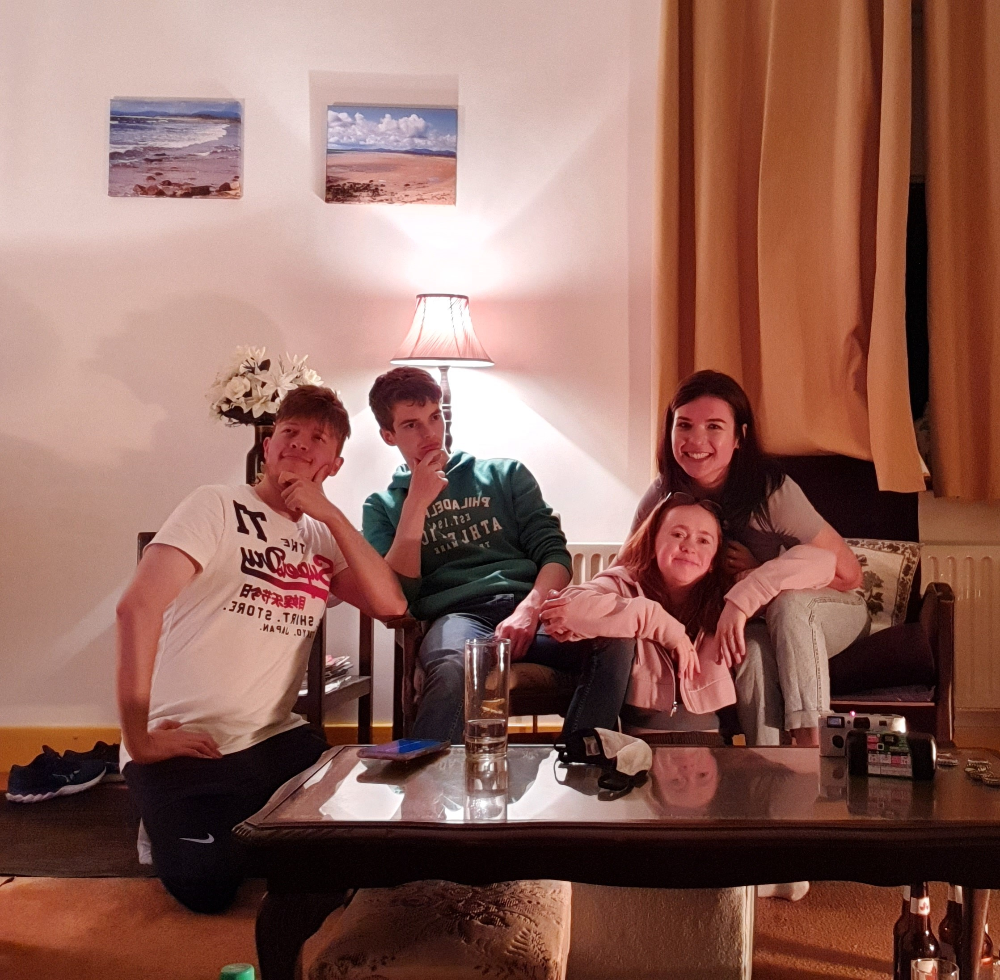
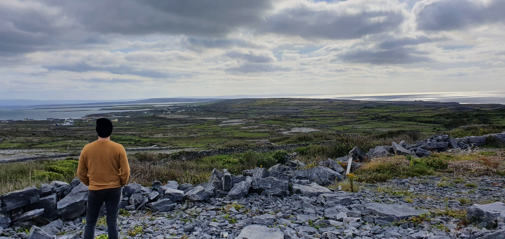
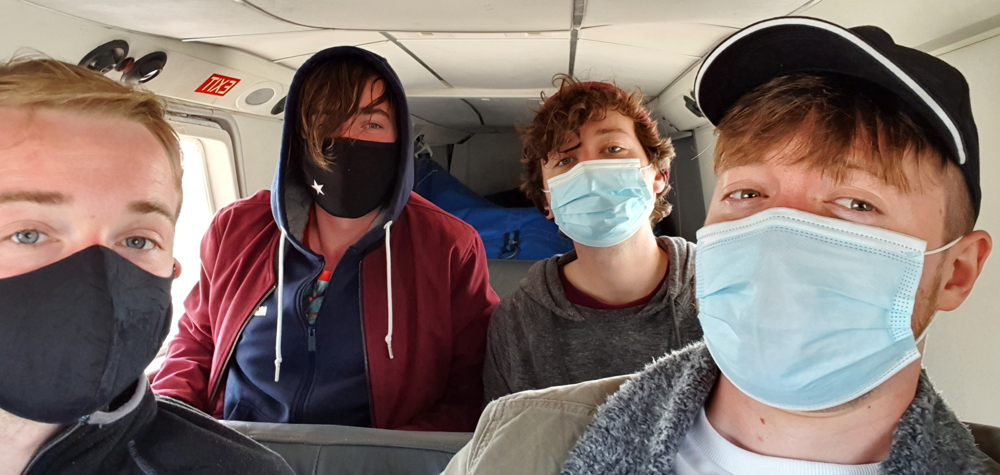
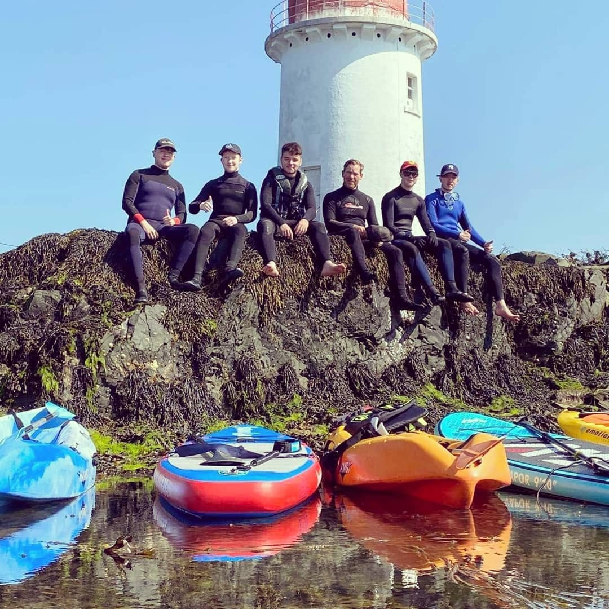

:D
My Hobbies and fun facts
The Most Expensive Guitar Ever Sold for $2.8million at an auction to raise money for victims of the 2004 Indian Ocean earthquake/tsunami.

Hiking has been known to increase the satisfaction level of many types of freeze dried food, as well as several flavors of energy bars, up to 35 percent.

Friendship and work can go hand in hand. Various studies have shown that having friends helps you find work and be more happy, creative, productive and competitive in the office.

According to Harvard Medical School, a 155 pound person jogging at a pace of 12 minutes per mile burns 298 calories every 30 minutes. Its one of the best ways of burning calories.

The noun “Skiing” is the only word in the English dictionary to have a double “ii” located directly in the middle. This fact might come in useful in a pub quiz some day – who knows.
Learning to become creative is a deliberate process, very much the same as learning to read or doing maths. Imagination and critical thinking are developed through art.

If you are someone who has trouble sleeping or staying asleep, then working out is your answer. Exercise helps to clear your head and helps you feel relaxed.

Team Fortress was originally a 1996 Quake mod that was eventually used by Valve in 1999. This, in turn, paved the way for the insanely influential Team Fortress 2.

The Cliffs of Moher is by far one of the most popular tourist destinations in Ireland for sight seeing, attracting over one million visitors each year.

In the 60 odd seconds you’ve been reading this, 56 pieces of luggage have been lost, over 2174 people have arrived in foreign countriesand 1/4 of a million dollars was spent by Americans abroad.

The first people in the world to build and use kayaks were Inuit, Aleut, and Yup’ik people. these indigenous people live in modern day Greenland, Canada, and Alaska.